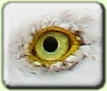

Configure Your EFG
Configure Templates
To Configure Page For Beginners
To Configure Page For Intermediate users
To Configure Page For Advanced users
Upload Extras
Upload images for a template
(header images and other graphics to enhance a template)
Upload css for a template
(change the default style code for any template)
Upload javascript for a template
View Links
Front Page to Search
View URLs for all EFGs
(handy for copying and pasting links to you EFG on web pages)
© 2006 EFG Group and UMass Boston. This research is supported in part by the NSF.